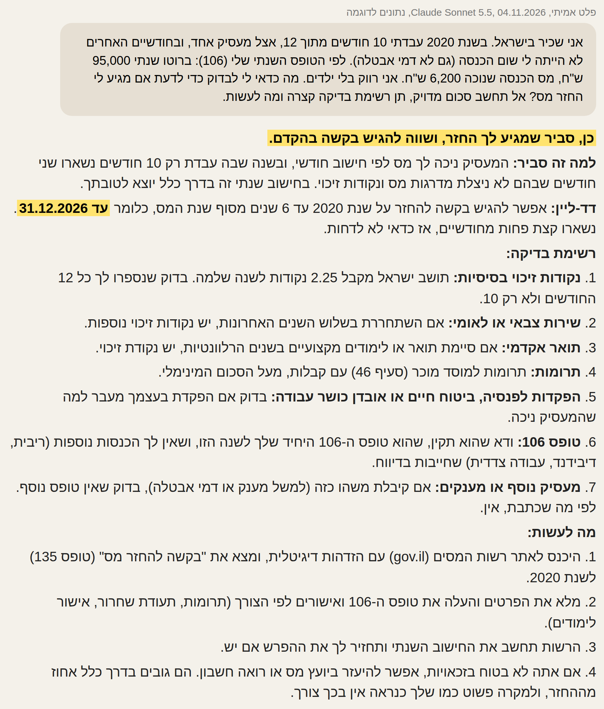
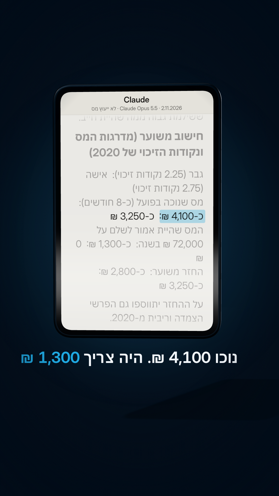
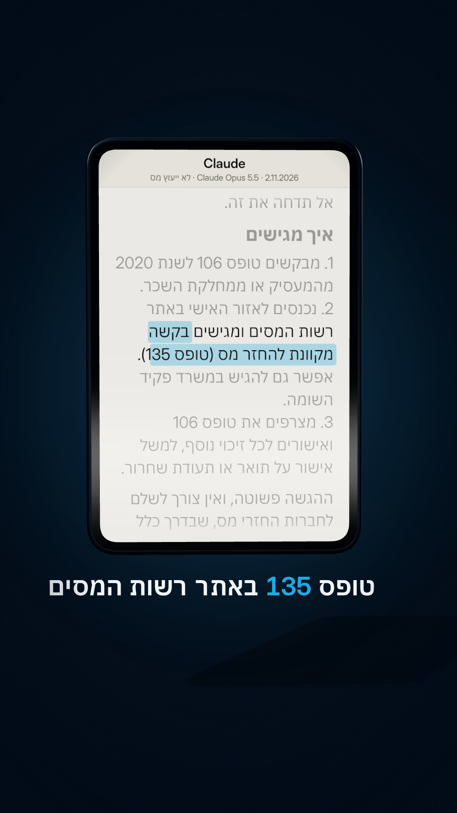

תלוש משכורת: החזר מס על 2020
היו לכם חודש או חודשיים בלי עבודה באותה שנה, או עבודה שנייה בלי תיאום מס? יש סיכוי טוב שירד לכם יותר מדי מס. על 2020 אפשר לבקש החזר רק עד 31.12.2026. הנה מה לכתוב ל-Claude, 3 שאלות לפני שמגישים, והתשובה המלאה מהריל.
3 שאלות לפני שמגישים
- היו לי חודשים בלי שום הכנסה באותה שנה (גם בלי דמי אבטלה)?
- עבדתי בשתי עבודות באותו זמן בלי תיאום מס?
- סימנתי בטופס 101 שלא עבדתי מתחילת השנה? אם כן, ייתכן שהמעסיק כבר התחשב בזה וההחזר קטן יותר.
מה לכתוב ל-Claude
3 מספרים מהטופס השנתי (106), בלי שם, בלי תעודת זהות ובלי להעלות את הטופס:
אני שכיר בישראל. בשנת ___ עבדתי ___ חודשים מתוך 12, אצל ___ מעסיקים. בחודשים האחרים: לא הייתה לי הכנסה / קיבלתי דמי אבטלה / אחר: ___. לפי הטופס השנתי שלי (106): ברוטו שנתי ___ ש"ח, מס הכנסה שנוכה ___ ש"ח. מצב משפחתי וילדים: ___. מה כדאי לי לבדוק כדי לדעת אם מגיע לי החזר מס? אל תחשב סכום מדויק, תן רשימת בדיקה קצרה ומה לעשות. חשוב: לפי רשות המסים אפשר לבקש החזר עד 6 שנים אחורה, כלומר על 2020 עד 31.12.2026.
ההוכחה: התשובה האמיתית מהריל
בריל נתנו ל-Claude Sonnet 5.5 (הגרסה החינמית, 4.11.2026) נתונים לדוגמה: 10 חודשי עבודה ב-2020, ברוטו 95,000 ש"ח, מס שנוכה 6,200 ש"ח, רווק. בחישוב שלנו לפי המדרגות של 2020 (לא של Claude) יוצא החזר של כ-1,850 ש"ח. זו התשובה כמו שהיא. שימו לב: בסעיף 1 ברשימה שלו, טופס 106 תמיד מראה רק את החודשים שעבדתם. הנקודות של כל השנה נחשבות רק בבקשה להחזר עצמה. בבדיקה חוזרת, Claude Opus נתן תשובה דומה, ו-Claude Haiku כתב בטעות שהמועד הוא 4 שנים. הוא 6.

**כן, סביר שמגיע לך החזר, ושווה להגיש בקשה בהקדם.** **למה זה סביר:** המעסיק ניכה לך מס לפי חישוב חודשי, ובשנה שבה עבדת רק 10 חודשים נשארו שני חודשים שבהם לא ניצלת מדרגות מס ונקודות זיכוי. בחישוב שנתי זה בדרך כלל יוצא לטובתך. **דד-ליין:** אפשר להגיש בקשה להחזר על שנת 2020 עד 6 שנים מסוף שנת המס, כלומר **עד 31.12.2026**. נשארו קצת פחות מחודשיים, אז כדאי לא לדחות. **רשימת בדיקה:** 1. **נקודות זיכוי בסיסיות:** תושב ישראל מקבל 2.25 נקודות לשנה שלמה. בדוק שנספרו לך כל 12 החודשים ולא רק 10. 2. **שירות צבאי או לאומי:** אם השתחררת בשלוש השנים האחרונות, יש נקודות זיכוי נוספות. 3. **תואר אקדמי:** אם סיימת תואר או לימודים מקצועיים בשנים הרלוונטיות, יש נקודת זיכוי. 4. **תרומות:** תרומות למוסד מוכר (סעיף 46) עם קבלות, מעל הסכום המינימלי. 5. **הפקדות לפנסיה, ביטוח חיים או אובדן כושר עבודה:** בדוק אם הפקדת בעצמך מעבר למה שהמעסיק ניכה. 6. **טופס 106:** ודא שהוא תקין, שהוא טופס ה-106 היחיד שלך לשנה הזו, ושאין לך הכנסות נוספות (ריבית, דיבידנד, עבודה צדדית) שחייבות בדיווח. 7. **מעסיק נוסף או מענקים:** אם קיבלת משהו כזה (למשל מענק או דמי אבטלה), בדוק שאין טופס נוסף. לפי מה שכתבת, אין. **מה לעשות:** 1. היכנס לאתר רשות המסים (gov.il) עם הזדהות דיגיטלית, ומצא את "בקשה להחזר מס" (טופס 135) לשנת 2020. 2. מלא את הפרטים והעלה את טופס ה-106 ואישורים לפי הצורך (תרומות, תעודת שחרור, אישור לימודים). 3. הרשות תחשב את החישוב השנתי ותחזיר לך את ההפרש אם יש. 4. אם אתה לא בטוח בזכאויות, אפשר להיעזר ביועץ מס או רואה חשבון. הם גובים בדרך כלל אחוז מההחזר, ולמקרה פשוט כמו שלך כנראה אין בכך צורך.
חברות החזרים או לבד?
חלק מחברות ההחזרים לוקחות 17 עד 23% מההחזר ועוד מע"מ (לפי מחירון מידרג), כלומר חמישית ויותר. הבקשה עצמה (טופס 135) מוגשת באזור האישי באתר רשות המסים, בחינם. אם לא בטוחים, אפשר לבדוק קודם בסימולטור של רשות המסים. ולפעמים החישוב השנתי מראה דווקא חוב, למשל כשנקודות הזיכוי נוצלו בשתי עבודות.
מהריל הקודם: התחלתם לעבוד באמצע 2020
עבדתם רק חלק משנת 2020? בדוגמה מהריל (8 חודשים, 9,000 ש"ח ברוטו) יצא החזר מס של כ-2,800 ש"ח. על 2020 אפשר לבקש החזר רק עד 31.12.2026. הנה השאלה המלאה ל-Claude, החישוב, ואיך מגישים.
למה זה קורה, בשתי שורות
- אם המעסיק לא עשה חישוב מצטבר, הוא הוריד מס כל חודש כאילו תרוויחו את אותה משכורת כל השנה.
- נקודות הזיכוי והמדרגות הנמוכות של החודשים בלי עבודה לא נוצלו. בחישוב השנתי ההפרש חוזר אליכם.
איך משתמשים
- מעתיקים את השאלה (הכפתור למטה) וממלאים את הפרטים שלכם במילים. בלי מסמכים.
- מדביקים ב-Claude או ב-ChatGPT. השורה האחרונה בשאלה כוללת את המועד, כי מודל קטן עלול לטעות בו: בבדיקה שלנו Claude Haiku כתב שהמועד עבר, וזה לא נכון.
- אם נראה שכדאי: מבקשים מכל מעסיק טופס 106 של 2020, ומגישים בקשה להחזר מס (טופס 135) באזור האישי באתר רשות המסים. אפשר לבד, בחינם.
השאלה ל-Claude
תעזור לי לבדוק אם יכול להיות שמגיע לי החזר מס על שנת 2020. הפרטים: - ב-2020 עבדתי ___ חודשים (מ___ עד ___), כשכיר אצל ___ מעסיקים, כ-___ ש"ח ברוטו בחודש - בשאר החודשים: לא הייתה לי הכנסה / קיבלתי דמי אבטלה / קצבה / אחר: ___ - מין, מצב משפחתי וילדים: ___. הכנסה אחרת: ___. ביקשתי בעבר החזר מס על 2020: כן / לא 1. תסביר בשפה פשוטה אם ולמה המצב הזה עלול לזכות אותי בהחזר מס. 2. תעשה הערכה גסה של סכום ההחזר, לפי מדרגות המס ושווי נקודת הזיכוי של 2020, ותראה את החישוב בקצרה. תגיד מה משנה את הסכום (פנסיה, דמי אבטלה, חישוב מצטבר). 3. איזה מסמך עיקרי צריך, ואיך ועד מתי מגישים על 2020. אל תמציא נתונים שאתה לא בטוח בהם. היום ___. תענה בעברית, קצר וברור. חשוב: לפי רשות המסים אפשר לבקש החזר עד 6 שנים אחורה, כלומר על 2020 עד 31.12.2026.
ההוכחה: התשובה האמיתית מהריל
בריל כתבנו ל-Claude Opus 5.5 (2.11.2026) משפט אחד, בדיוק את זה (פרטים לדוגמה, לא אדם אמיתי):
ב-2020 עבדתי רק 8 חודשים, ממאי עד דצמבר, ומשכורת של 9,000 שקל ברוטו בחודש. בשאר החודשים לא הייתה לי שום הכנסה. אני רווק. מגיע לי החזר מס? כמה בערך, ועד מתי אפשר לבקש?
בדקנו את החישוב גם ידנית מול המדרגות של 2020 (נקודת זיכוי 219 ש"ח לחודש, 10% עד 6,330 ש"ח בחודש, 14% עד 9,080): יוצא 2,825 ש"ח לגבר. באותו משפט, המודל הקטן (Claude Haiku) נתן סכום אחר (1,000 עד 2,000 ש"ח) וכתב שהמועד עבר. זה לא נכון: יש עד 31.12.2026. התשובה של Opus כמו שהיא:


## כן, כנראה מגיע לך החזר. ההגשה צריכה להיות עד 31.12.2026 **למה מגיע לך החזר:** המעסיק מנכה מס כל חודש כאילו תעבוד בשכר הזה 12 חודשים. בפועל עבדת רק 8 חודשים, ולכן גם לא ניצלת את נקודות הזיכוי של ינואר עד אפריל. בסוף השנה המס ששילמת גבוה ממה שהיית חייב. ### חישוב משוער (מדרגות המס ונקודות הזיכוי של 2020) | | גבר (2.25 נקודות זיכוי) | אישה (2.75 נקודות זיכוי) | |---|---|---| | מס שנוכה בפועל (כ-8 חודשים) | כ-4,100 ₪ | כ-3,250 ₪ | | המס שהיית אמור לשלם על 72,000 ₪ בשנה | כ-1,300 ₪ | 0 ₪ | | **החזר משוער** | **כ-2,800 ₪** | **כ-3,250 ₪** | על ההחזר יתווספו גם הפרשי הצמדה וריבית מ-2020. **ההחזר יכול להיות גבוה יותר אם יש לך זכאויות נוספות, למשל:** - נקודות זיכוי על תואר אקדמי או מקצועי, אם סיימת את הלימודים בשנים שלפני כן. - נקודות זיכוי לחיילים משוחררים, אם השתחררת עד 3 שנים קודם. - נקודות זיכוי לעולים חדשים, או מגורים ביישוב מזכה. - הפקדות לפנסיה או לביטוח חיים שלא קיבלת עליהן זיכוי מלא. - תרומות למוסדות מוכרים (סעיף 46). ### מועד אחרון אפשר לבקש החזר עד 6 שנים אחורה מסוף שנת המס. **לשנת 2020 המועד האחרון הוא 31.12.2026, כלומר נשארו כחודשיים.** אחרי התאריך הזה הזכות להחזר על 2020 פוקעת. אל תדחה את זה. ### איך מגישים 1. מבקשים **טופס 106 לשנת 2020** מהמעסיק או ממחלקת השכר. 2. נכנסים לאזור האישי באתר רשות המסים ומגישים **בקשה מקוונת להחזר מס (טופס 135)**. אפשר גם להגיש במשרד פקיד השומה. 3. מצרפים את טופס 106 ואישורים לכל זיכוי נוסף, למשל אישור על תואר או תעודת שחרור. ההגשה פשוטה, ואין צורך לשלם לחברות החזרי מס, שבדרך כלל לוקחות 15% עד 25% מההחזר. **הערה:** זו הערכה בלבד. הסכום המדויק תלוי בתלושים ובטופס 106 שלך. כדאי לבדוק גם את 2021, אם היו בה חודשים בלי עבודה או החלפת מקום עבודה.
כדאי לדעת
- המועד: בקשה להחזר מס אפשר להגיש עד 6 שנים מסוף שנת המס. על 2020: עד 31.12.2026. המקור: רשות המסים (gov.il, "בקשה להחזר מס", טופס 135), וכל זכות.
- הסכום בדוגמה תלוי בשכר: בשכר נמוך יותר ההחזר קטן יותר. גם הפקדות לפנסיה משנות אותו.
- דמי אבטלה הם הכנסה חייבת במס, ולכן מי שקיבל אותם ב-2020 יקבל כנראה החזר קטן יותר, או בלי החזר.
- אם המעסיק כבר עשה חישוב מצטבר, ייתכן שאין החזר. רק טופס 106 והחישוב השנתי יגידו.
- מי שהייתה לו הכנסה נוספת (עסק, שכירות מעל התקרה ועוד) אולי חייב בדוח שנתי, ואז טופס 135 לא מתאים.
🔒 לא מעלים לצ'אט תלוש, טופס 106 או תעודת זהות. מספיק לתאר במילים.
⚠️ זה לא ייעוץ מס. לבדיקה: אתר רשות המסים, או הערך "החזר מס הכנסה" בכל זכות.
כל יום כלי AI חדש שחוסך לכם כסף וזמן ← עקבו ב-@critifly